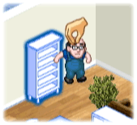

14 |
Fase di costruzione - elementi di base |
 |
 Costruzione di un oggetto
Costruzione di un oggettoPer iniziare a costruire un oggetto, occorre far dirigere un operaio verso l'oggetto in questione.
Per far dirigere un operaio verso un oggetto: 
Seleziona un operaio puntando il telecomando Wii verso di lui e tenendo premuto il pulsante A.
Così facendo prendi l'operaio è lo fai spostare liberamente all'interno della stanza.
Rilascia il pulsante A per lasciarlo andare su uno degli oggetti la cui costruzione non sia ancora terminata. Oggetti evidenziati  Talvolta gli oggetti sono evidenziati con un colore che corrisponde a quello di un determinato operaio. In questi casi, seleziona l'operaio il cui colore corrisponde a quello dell'oggetto e dirigilo verso l'oggetto alla cui costruzione deve lavorare.
Usando l'operaio con il colore giusto per ciascun oggetto diminuirai la perdita di energia e scongiurerai gli infortuni. Calendario 
Il Calendario si trova nell'angolo in alto a destra. Mostra il tempo a tua disposizione per portare a termine un progetto.
Mentre la squadra è al lavoro e il tempo passa, il Calendario arriva automaticamente fino a 0 giorni rimasti.
Se il Calendario raggiunge 0 giorni rimasti prima che la squadra abbia terminato il lavoro, la Fase di costruzione ha di nuovo inizio.
Aumento velocità di costruzione
Puoi aiutare un operaio puntando il telecomando Wii verso di lui e tenendo premuto il pulsante B. In questo modo visualizzerai l'attrezzo che sta usando.
Mentre tieni premuto il pulsante B, imita il movimento che vedi nel Display della scatola degli attrezzi con il telecomando Wii.
Quando aiuti gli operai, questi ottengono un aumento della velocità di costruzione.
|
 Tieni d'occhio gli operai che hanno bisogno d'aiuto. Un operaio che ha bisogno di una mano smette di lavorare e non ricomincia finché non riceve il tuo aiuto.
Tieni d'occhio gli operai che hanno bisogno d'aiuto. Un operaio che ha bisogno di una mano smette di lavorare e non ricomincia finché non riceve il tuo aiuto. |
 |
 |